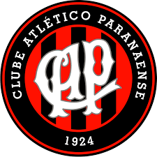

o Athletico PR é o maior time do paraná
o time mais qualificado para ganhar a libertadores foi o de 2022 quando chegou na final contra o flamengo com seguinte escalação
 o Athletico PR venceu 8+ vitória para chegar na final
o desempenho do athletico foi foi eficaz pra chegar na final mas infelizmente não coneguiu vencer
os artilheiros da competição foram, Pedro com 12 gols atuando pelo flamengo e o Gabigol com 11 gols atuando pelo flamengo também
e o artilheiro do Athletico PR foi o pablo 11 gols